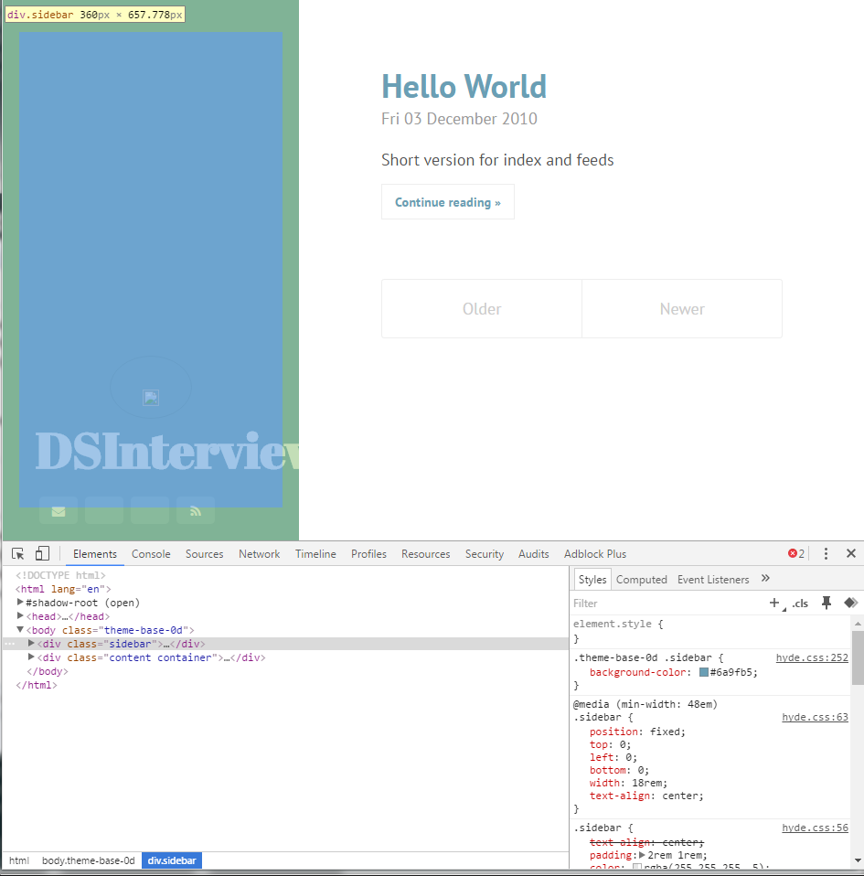
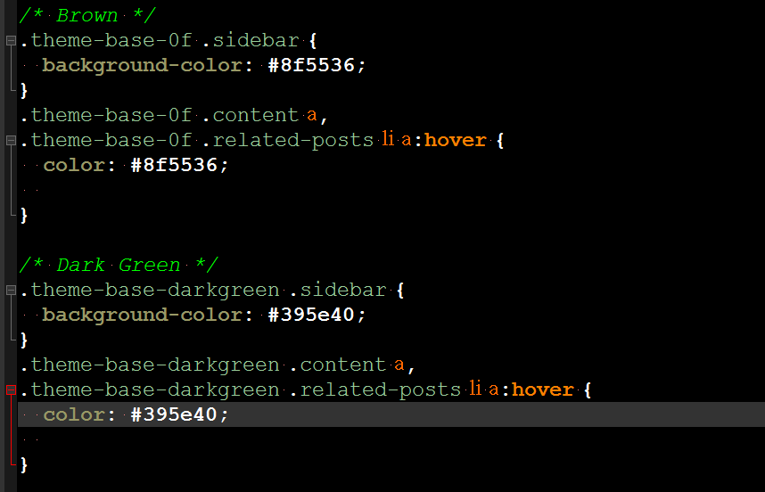
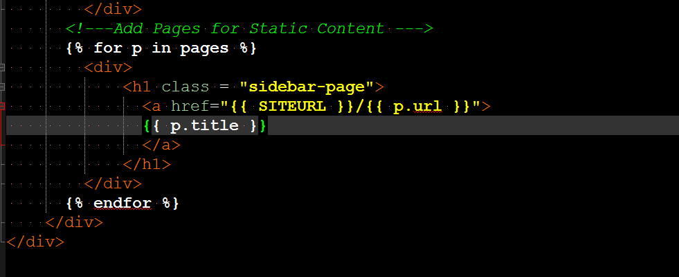

Modifying a Pelican Template
Mon 15 August 2016When working with data it's going to come in a lot of sources. If you're unlucky it will be a unstructured text or a network folder full of Excel files. If you're really lucky it will be in a a Tidy format. Somewhere inbetween are databases.
Databases structure
Databases are great, the data is structured, types are well represented, and the data is available for all. What's not great is the data is not always structured in the way a data scientist would like to use it.
After deciding to use a Statically Generated Site I needed to pick a template. Trouble was that I had already found a template for WordPress that I had liked.
 The Wordpress theme
The Wordpress theme
Luckily there was a GitHubRepo
that had many prexisting themes and even more luckily there was one
that was already a close fit
 The Pelican-Hyde theme
The Pelican-Hyde theme
There were some things I didn't like though. I didn't like the sidebar size, the links to social media, and the font, or that the sidebar was focused on the bottom. Additionally I wanted the horizontal line element from the WordPress theme. Given that this theme was so close though, rather than start from scratch I decided to modify the existing one instead.
Peeking under the hood
Given that this is a Statically Generated Site everything you see can be traced back to a single file quite easily. However given this is still web technology there is still the possibility that the formatting could be coming from an html file and multiple css stylesheets. Bluntly put figuring out why certain things are laid out a certain way, or why they're a certain color, can still be a pain. Luckily though the Chrome Team developed awesome dev tools which make figuring out what's going on much easier  Chrome Dev Tools
In the screenshot above you can see a couple of awesome things. One is that by highlighting over an element I can both see the code in the Document Object Model and the full tree of CSS stylers that are changing it's appearance and position. While I won't go into all the tools here, there are numerous other tabs and functions to dive even deeper into more complex applications. However in generality using the dev tools is what I used in the following steps to deconstruct the Wordpress and Pelican themes

Adding a Dark Green Class
For the most part this modifying the CSS to reflect the styles we want.
For instance above an addition was made the CSS style sheets to allow for
a Dark Green class that uses the same green in the original WordPress Theme.
Modifying the template
I also wanted links to be added for the static pages to include pages such as About This Blog and References. Luckily Pelican decided to use the jinja2 templating engine which is simple to use.

By adding the above loop in white, links will now be added for each sidebar link.
Why does this matter for Data Science
As a data scientist part of the job is being able to present information seamlessly and quickly. The Web was built for this Using it to be able to quickly and effectively use this medium is an extremely useful skill to have in your communication toolset, and things like the Chrome Devtools and jinja2 templating engine are extremely powerful to template and style reusable webpages for reports and internal facing dashboards.